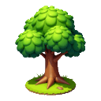
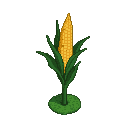
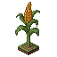
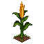
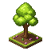

Round 3 — Reference-style (flat round base) ✅ winning direction
This is it. Feeding your reference tree as the style anchor (PixelLab
Plan for the rest: your three seasonal refs become the per-season anchors — spring/summer →
background_image style-match, still ~1 generation) reproduces the flat round
grassy base and the soft cozy look — and it transfers across subjects: the corn
adopts the same style and base even though the reference was a tree. Output is original 128×128
art (downscales cleanly to 64 for the board, 128 kept as the @2x master).
Plan for the rest: your three seasonal refs become the per-season anchors — spring/summer →
treeSpring, autumn → treeAut, winter →
treeWinter — so each season inherits the right ground (grass → snow) and palette
while staying the same subject.🌳 Oak — summer (reference-styled)
tile_tree_oak · resource → plank
ref-styled · 1 gen
@128 (master)
@64 (board)
@40 (small)
🌽 Corn — summer (reference-styled, cross-subject)
tile_grain_corn · resource → flour / corn-cob bundle
ref-styled · 1 gen
@128 (master)
@64 (board)
@40 (small)
📦 Round 2 — summer anchor on a thin iso slab (rejected: still not a flat round base)

oak a1

oak a3

corn a1

corn a3
📦 Round 1 — spring on a tall iso cube (rejected: pad too block-like)

oak c1

corn c1